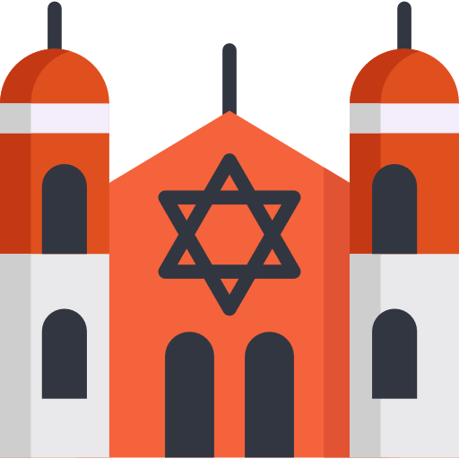

Muitas igrejas cristãs guardam registros de batismo dos seus fiéis e estes servem para encontrarmos algum ancestral que tenha nascido em um país diferente do seu, alguns dos nossos parceiros são os Mórmons, Católicos Romanos, Maronitas e Ortodoxos, os Batistas, Metodistas e Luteranos são alguns dos nossos parceiros.
O povo islâmico atualmente tem mais de 73 ramificações nossas equipes trabalham atualmente com 24 ramificações, entre ela há os Acesnos, Agha Khanis, Ahl-Haqq, Ahmadia, Ali-Ilahis, Aswaritas, Azraqitas, Bahai, Bahsamitas, Bakthashis, Bayyatitas, Bisritas,Buwayhida, Druzos, Faylasufitas, Hambalismo, Hisamitas, Hudailitas, Ibadita, Iskafitas, Ismailismo, Jafaritas, Jahizitas, Jubaitas, trabalhamos no mundo muçulmano para aumentar ainda mais o nosso leque de dados para atender ainda mais pessoas.

Temos mais de 320 centros judaicos cadastrados pelo mundo e centrais de dados trabalhando para encontrar ancestrais proximós, mais de 30% dos nossos usuários que tinham ancestral judeu eram sefarditas, assim nossas principais ações na Europa ficam em Portugal e Espanha, na Ásia trabalhamos diretamente de Israel onde há um dos maiores acervos de dados judaicos.
Documentos
A partir de atestados de óbitos de parentes, certidões de nascimento ou batismo, contratos de locação, compra ou venda de veículos ou imóveis.
Com parcerias com instituições como a Torre do Tombo(Portugal), com a BorderForce(Inglaterra), TURKSTAT(Turquia) e outros institutos mundo a fora, sem contar os parceiros e escritórios que formam nossa web.
Se mora já no país e tem algum imóvel fazemos o inventário de seus bens para abertura do processo de dupla cidadania, antes da abertura passará por um questionário baseado com dados de alguns dos países que trabalhamos, para saber se é possível abrir o processo.